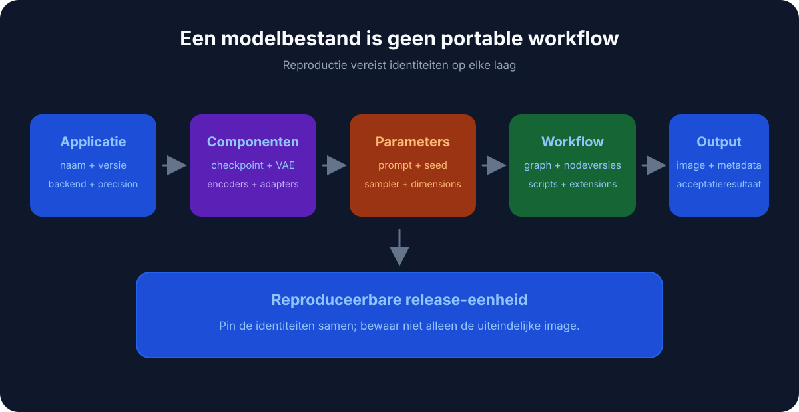
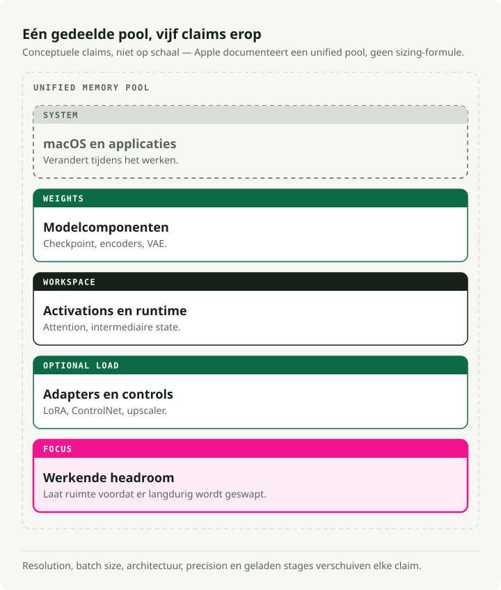
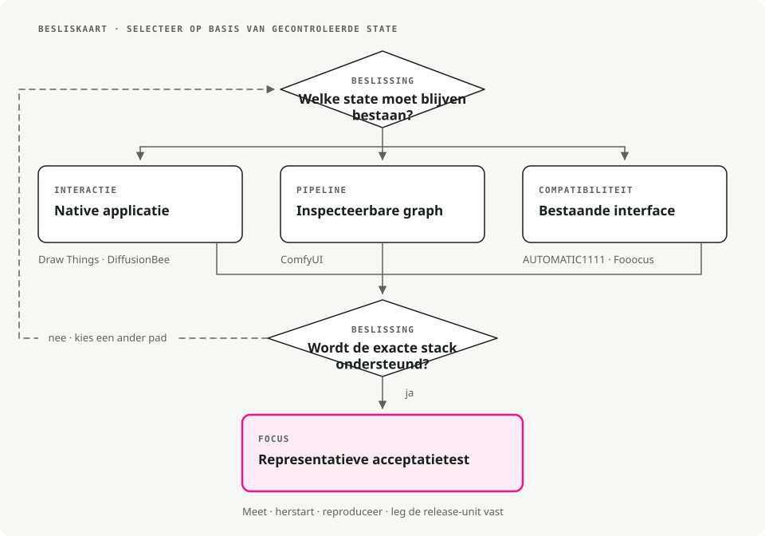

Automatische vertaling
Dit artikel is automatisch vertaald vanuit de oorspronkelijke Engelse versie.
Stable Diffusion op macOS: Draw Things, DiffusionBee, ComfyUI, A1111 en Fooocus
Het uitvoeren van Stable Diffusion op macOS is voornamelijk een kwestie van keuze van de benodigde hulpmiddelen. Een .safetensors De bestand bevat enkele gigabytes aan gewichten, en zodra je er één hebt gedownload, kan elke lokale Stable Diffusion-app het gebruiken. Wat verschilt tussen de verschillende apps, is alles wat het bestand omringt: de gebruikersinterface, de werkwijzen, en de hoeveelheid kennis die nodig is om een bruikbaar afbeelding te genereren.
Dus het kiezen van een app is voornamelijk een beslissing op het gebied van gebruikerservaring, en niet een keuze op basis van het model zelf. De mogelijkheden variëren van apps waarbij je gewoon kunt dragen en neerzetten zonder iets te hoeven lezen, tot complexe nodegrafieken waarbij het soms een hele week duurt voordat je er comfortabel mee omgaat.
Kort samengevat: Op macOS kun je voor snelle lokale generatie Draw Things of DiffusionBee gebruiken, ComfyUI wanneer je controle op grafische niveau nodig hebt, en AUTOMATIC1111 wanneer compatibiliteit met extensies belangrijk is. Apple Silicon kan nuttige afbeeldingswerkflows uitvoeren, maar de uniforme geheugenopslag die gelijkstaat aan VRAM bepaalt nog steeds de grenzen.
Hoe Stable Diffusion-hulpprogramma’s op macOS werken
Allemaal deze applicaties doen hetzelfde: ze zetten een gebruikersinterface voor Stable Diffusion. Achter de schermen laden ze modelgewichten, beheren ze het geheugen en sturen ze de verwerking door naar de GPU van je Mac.

Omdat ze dezelfde onderliggende architectuur delen, kun je meestal modelbestanden delen..safetensors) ertussenin. Laad het model één keer op en probeer het vervolgens in een paar apps uit om te zien welke werkwijze u het meest prefereert.
Het voordeel van Apple Silicon
Waarom is de Mac zo geschikt voor dit doel? Geunificeerde geheugenopslag. Op een PC met een aparte GPU heb je mogelijk slechts 8GB of 12GB aan VRAM. Op een Mac heeft de GPU toegang tot het volledige systeemgeheugen.

Daarom kan een MacBook Pro met 32 GB of 64 GB RAM modellen zoals SDXL of Flux laden, die simpelweg niet op een gewone gaming-PC passen.
1. Dingen tekenen – Nativ en geoptimaliseerd
- Download: App Store-link
Draw Things is speciaal ontwikkeld voor Apple Silicon. Het wordt geleverd als een native iOS/macOS-app, zonder Python, terminal of browser, en maakt meer gebruik van Metal dan welk ander programma op deze lijst ook. Het functionaliteitspakket is evenmin beperkt: ControlNet, Inpainting, Outpainting, LoRAs en scriptbare workflows zijn allemaal aanwezig. Het nadeel is een dichte gebruikersinterface die probeert veel informatie op één scherm onder te brengen. Het werkt zowel op iPhones als op Macs, en dat merk je meteen.
2. DiffusionBee - Het eenvoudigste uitgangspunt
- Download: diffusionbee.com
Als je afbeeldingen binnen vijf minuten wilt genereren, is DiffusionBee een goede plek om te beginnen. Download de DMG-bestand, sleep deze naar Applications en start het programma. Er is geen stap nodig om een checkpoint te laden; je kiest gewoon een stijl en typt een prompt in. Het gebruikersinterface is strak en heeft een Apple-achtig uiterlijk, met ingebouwde upscaling- en achtergrondverwijderingsfuncties. Je krijgt geen geavanceerde sampler-instellingen of complexe pipelines, en nieuwe functies van de ontwikkelaars (zoals de nieuwste ControlNet-modellen) komen trager beschikbaar dan in tools die meer gericht zijn op technische gebruikers.
3. ComfyUI – Het nodegebaseerde laboratorium
- Download: comfy.org
ComfyUI vervangt schuifregelaars en tekstvelden door een nodegrafiek. Je verbindt de verwerkingsstappen met elkaar op dezelfde manier als in een visuele programmeeromgeving. Een pipeline zoals “Afbeelding genereren → Opschaalniveau verhogen → Gezicht herstellen” bestaat als een expliciete, herbruikbare grafiek, en er worden alleen de knopen opnieuw uitgevoerd die daadwerkelijk zijn veranderd, waardoor herhaalde uitvoeringen vaak aanzienlijk sneller verlopen dan in andere UI’s. Duizenden door de gemeenschap gemaakte aangepaste knopen breiden de mogelijkheden nog verder uit. De eerste keer dat ik het opende, leek het canvas op een kom spaghetti, en de initiële instelling vereist enige kennis van Python en de terminal.
4. Stable Diffusion WebUI (AUTOMATIC1111)
- Installatiegids: Installatie op Apple Silicon
A1111’s sterke punt is zijn extensie-ecosysteem. Zodra er een nieuwe AI-techniek verschijnt – of het nu om een nieuwe sampler, een ControlNet-preprocessor of een upscaler gaat – wordt deze meestal al binnen enkele dagen verpakt als een A1111-extensie. De meeste Stable Diffusion-tutorials op YouTube richten zich ook op dit interface, waardoor hulp gemakkelijk te vinden is. Het programma draait als een browserdashboard met een tab voor elk onderdeel; dit is functioneel, maar wel overzichtloos, en de geheugennodigheid ligt doorgaans hoger dan bij ComfyUI of Draw Things.
5. Fooocus - Midjourney, lokaal
Als je Midjourney hebt gebruikt en de ervaring goed vond (je typt een prompt, krijgt een gepolijst afbeelding zonder dat er knoppen hoeven te worden aangepast), dan hercreëert Fooocus dit op locatie. Het verbergt de technische keuzes achter slimme standaardinstellingen, zodat het UI-minimaal blijft en de uitvoerkwaliteit direct vanaf het begin hoog is. Wanneer je een specifiek uiterlijk wilt opleggen en de standaardinstellingen daartegen ingaan, is er weinig wat je nog kunt doen. De prestaties op een Mac kunnen ook achterblijven ten opzichte van NVIDIA, omdat optimalisaties meestal eerst gericht zijn op CUDA.
Snelle vergelijkingstabel
| Hulpmiddel | Installatiecomplexiteit | Interfacestijl | Bestemd voor |
|---|---|---|---|
| Dingen tekenen | ★☆☆☆☆ (App Store) | Native App (Pro) | De ideale balans (Kracht + Eenvoud) |
| DiffusionBee | ★☆☆☆☆ (DMG) | Native-app (eenvoudig) | Beginners en informeel gebruik |
| ComfyUI | ★★★☆☆ (Python) | Node-graf | Complexe workflows en automatisering |
| A1111 WebUI | ★★★★☆ (Terminal) | Browserdashboard | Extensies en communityondersteuning |
| Fooocus | ★★★☆☆ (Python) | Minimalistisch | Midjourney-stijl Prompten |
Besluitstroomdiagram
Als je nog twijfelt, volg dan dit:

Praktische tips voor Mac-gebruikers
1. Systeemeisen
- RAM is het belangrijkst:
- 8GB: Voldoende voor basisafbeeldingen van 512x512, maar reken op trage prestaties en crashes bij nieuwere modellen zoals SDXL.
- 16GB: Het minimale niveau dat comfortabel is. Hiermee kun je de meeste functies gebruiken, inclusief SDXL.
- 32GB+: Het ideale niveau. Hiermee kun je meerdere modellen tegelijk laden en meerdere taken uitvoeren tijdens generatie.
- Opslag: Modellen zijn groot (2GB tot 6GB per model). Als je Mac weinig opslagruimte heeft, koop dan een externe SSD.
2. Waar je modellen kunt halen
De software is slechts het uitvoeringsomgeving. Je hebt ook modellen nodig.
- Civitai: Het grootste community-hub. Zoek naar “Checkpoints” die compatibel zijn met SD 1.5 of SDXL.
- Hugging Face: De “GitHub van AI”. Meer technisch gericht, maar de officiële bron voor base models van Stability AI.**
- Bestandstypen: Geef de voorkeur aan
.safetensors. Vermijd.ckptWanneer dat mogelijk is, aangezien het theoretisch gezien malicieuze code kan bevatten (zeldzaam in de praktijk, maar mogelijk).
3. Begin eenvoudig
Probeer ComfyUI niet op dag één al te installeren. Begin met DiffusionBee of Draw Things om een idee te krijgen van hoe prompting werkt. Zodra je tegen een muur aanloopt (“Ik wou dat ik de houding van deze karakter kon beheersen...”), kijk dan pas naar ControlNet en de meer geavanceerde hulpmiddelen.
Belangrijkste punten
- Kies het gereedschap op basis van het workflow: eenvoudige UI, grafische controle, uitbreidingsecosysteem of herhaalbare batchgeneratie.
- Apple Silicon is voldoende voor experimenten en enkele voorbereidingen in productieomgevingen, maar grote modellen en hoge resoluties leiden nog steeds tot geheugenbeperkingen.
- ComfyUI is het betere langetermijngereedschap wanneer workflows moeten worden opgeslagen, gecontroleerd en gereproduceerd.
- Houd modelbestanden, LoRAs en uitvoerresultaten vanaf dag één georganiseerd; hulpmiddelen voor afbeeldingen raken al snel rommelig.
Referenties
- Dingen tekenen - Lokale afbeeldingsgeneratie-app voor Apple-platformen. DiffusionBee - Lokale Stable Diffusion-app voor macOS. ComfyUI op GitHub - Workflow’s voor afbeeldingsgeneratie gebaseerd op nodes. AUTOMATIC1111 Stable Diffusion WebUI - Een Stable Diffusion-interface met veel extensies.